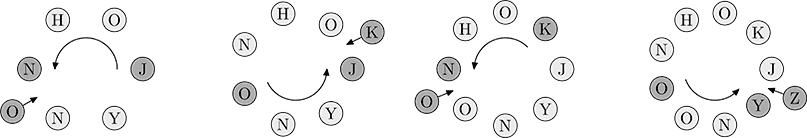

Home Page
F.A.Qs
Statistical Charts
Past Contests
Scheduled Contests
Award Contest
| Online Judge | Problem Set | Authors | Online Contests | User | ||||||
|---|---|---|---|---|---|---|---|---|---|---|
| Web Board Home Page F.A.Qs Statistical Charts | Current Contest Past Contests Scheduled Contests Award Contest | |||||||||
|
Language: Alphabet
Description Johnny is a little boy, and now he is learning alphabet. His father made him a birthday present — a large collection of tokens, each marked with a letter from ‘A’ to ‘Z’, and Johnny invented an interesting game to help himself learning. First, Johnny takes several tokens and puts them in a circle. After that he selects one of the tokens to start the game at, and chooses some number k. Each turn Johnny counts k tokens along the circle to find the next winning token and inserts another token to the circle immediately after it. This new token must hold the letter which follows alphabetically the letter written on the winning token, i.e. ‘B’ is inserted if the winning token is ‘A’, ‘C’ is inserted after ‘B’, etc. If the winning token is ‘Z’, the token ‘A’ is inserted. There are so many tokens available that Johnny can always find one with the required letter. After inserting the token Johnny proceeds to another game turn, this time starting from the newly inserted token. The number k is only selected once and is not changed between turns. The first four turns of a sample game with initial tokens ‘J’, ‘O’, ‘H’, ‘N’, ‘N’, ‘Y’ (‘J’ is the starting one) and k = 3 are shown on a figure below:  Georgie is Johnny’s elder brother. Since he is already a schoolboy, he plays the same game mentally and astonishes Johnny with his ability to predict the letter inserted at turn i. But as Johnny gets smarter and makes more and more turns, it becomes harder for Georgie to compete, so he decides to write a computer program to find the results quickly. Input The first line of the input file contains three integers: n — the number of tokens initially placed in a circle (1 ≤ n ≤ The second line contains a string of n uppercase letters (‘A’ to ‘Z’) — the tokens initially placed in a circle, starting from the initial token. Output Output a single uppercase English letter which is added to the circle at the m-th turn. Sample Input 6 3 4 JOHNNY Sample Output Z Source Northeastern Europe 2006, Northern Subregion |
[Submit] [Go Back] [Status] [Discuss]
All Rights Reserved 2003-2013 Ying Fuchen,Xu Pengcheng,Xie Di
Any problem, Please Contact Administrator